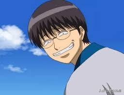

<!doctype html>
<html lang="en">
  <head>
    <!-- Required meta tags -->
    <meta charset="utf-8">
    <meta name="viewport" content="width=device-width, initial-scale=1, shrink-to-fit=no">

    <!-- Bootstrap CSS -->
    <link rel="stylesheet" href="https://cdn.jsdelivr.net/npm/bootstrap@4.6.0/dist/css/bootstrap.min.css" integrity="sha384-B0vP5xmATw1+K9KRQjQERJvTumQW0nPEzvF6L/Z6nronJ3oUOFUFpCjEUQouq2+l" crossorigin="anonymous">
    <body background="images (2).jpg"  width="1600px" height="1436px"></body>
    <title>主要人物介紹</title>
  </head>
  <body>
    <nav class="navbar navbar-expand-sm bg-info navbar-dark">
        <ul class="navbar-nav">
            
            <li class="nav-item">
                <a class="nav-link" href="index.html">首頁</a>
            </li>
            <li class="nav-item">
                <a class="nav-link" href="0923.html">作者&簡介&劇情大綱</a>
            </li>
            
        </ul>
    </nav>
    <br>
    <p>
        <h3><strong>坂田銀時</strong></h3><h4>本作品第一男主角。經營「萬事屋阿銀」的武士，是個擁有天然捲藍髮和死魚般的眼睛、上進心為零的人，衣著一般是黑色衣褲外罩套到一半的白底藍花和服。過去活躍於後期攘夷活動，以「白夜叉」之名威震敵我，可謂傳說中的人物。有陰險、腹黑的一面，說話的口癖是「你這傢伙是○○嗎」。有一流劍術，一把從電視購物買來的堅硬木刀「洞爺湖」可以粉碎大砲等硬物。被高杉指出與攘夷時代相較，身手似乎變得遲鈍，但實力依舊堅強。和真選組的土方十四郎相見就會鬥嘴。
    </h4><br>
    <p>
        <h3 class="text-right"><strong>志村新八</strong></h3><h4>本作的第二男主角。劍道道場「恆道館」的少年館長，以劍術為志向，為復興道場兼學習武士道，因受到銀時幫忙而成為萬事屋成員。個性相當溫柔，是個有禮貌的少年；但在追星時會變成一個熱血男子漢。瘋狂的迷戀歌手寺門通，為寺門通親衛隊隊長。平時存在感為零，不過在平時都會扮演吐槽角色，曾被取笑是本體為只會吐槽的眼鏡，因為他只會吐槽但大部分都不會去作。
    </h4><br>
    <p>
        <h3><strong>神樂</strong></h3><h4>本作品女主角。出身自宇宙最強戰鬥種族「夜兔」天人。外貌為藍眼橘紅髮，頭髮兩端綁著球狀髮髻。星海坊主的長女，神威的妹妹，但因兩人想法不同而感情不佳。由於血統關係，食慾異常旺盛，且重視量多於質，對米飯十分執著，認為沒有吃到米飯就不像吃過一餐，尤愛生蛋拌飯。平時零食則喜愛吃醋昆布。平時在對話中的角色屬性為毒舌，和真選組的沖田總悟相見就會鬥嘴，互相大打出手。
    </h4><br>
        <p>
            <h3><strong>定春</strong></h3><h4> 宇宙生物「狛神」，體型卻比一般狛神還要巨大，犬類生物，雄性，上代狛神的兒子，司掌「攻」，擁有強大的破壞力。是萬事屋的吉祥物角色，喜歡咬人的頭（尤其是銀時），食量極大，每天要消耗狗食9袋，平時大多數時間在睡覺。被經濟困難的巫女百音和阿音遺棄在萬事屋門前，後被神樂收養，定春的名字亦是神樂所命名。經常作為神樂的坐騎。
            由於食用草莓牛奶（作用相當於使狛神覺醒的山羊血與紅色果實）使其力量逐漸覺醒而巨大化，而後神樂因保護定春被人弄傷，定春在發怒下完全覺醒，最後百音、阿音和萬事屋眾人合力下才將力量封印。愛慕鼠溝組黑駒勝男的愛犬梅兒（メル）。
            《兩年後篇》被疣寄生，變成疣大叔，職業是快遞員。《性轉換篇》變成與原本設定不同的三國系列的赤兔馬。
            《靈魂轉換篇》阿銀跟土方交換靈魂之後，萬事屋被阿銀(土方)嚴加管理，自身也成為萬事屋二番隊隊員。而阿銀跟土方向源外求助之後實行第二次靈魂交換，結果長谷川的靈魂進入其身體，自己的則進入山崎體內，長谷川撇條後，其靈魂轉移到糞便上，定春的身體也因此成了空殼。</h4>
        
    </div>
    <!-- Optional JavaScript; choose one of the two! -->

    <!-- Option 1: jQuery and Bootstrap Bundle (includes Popper) -->
    <script src="https://code.jquery.com/jquery-3.5.1.slim.min.js" integrity="sha384-DfXdz2htPH0lsSSs5nCTpuj/zy4C+OGpamoFVy38MVBnE+IbbVYUew+OrCXaRkfj" crossorigin="anonymous"></script>
    <script src="https://cdn.jsdelivr.net/npm/bootstrap@4.6.0/dist/js/bootstrap.bundle.min.js" integrity="sha384-Piv4xVNRyMGpqkS2by6br4gNJ7DXjqk09RmUpJ8jgGtD7zP9yug3goQfGII0yAns" crossorigin="anonymous"></script>

    <!-- Option 2: Separate Popper and Bootstrap JS -->
    <!--
    <script src="https://code.jquery.com/jquery-3.5.1.slim.min.js" integrity="sha384-DfXdz2htPH0lsSSs5nCTpuj/zy4C+OGpamoFVy38MVBnE+IbbVYUew+OrCXaRkfj" crossorigin="anonymous"></script>
    <script src="https://cdn.jsdelivr.net/npm/popper.js@1.16.1/dist/umd/popper.min.js" integrity="sha384-9/reFTGAW83EW2RDu2S0VKaIzap3H66lZH81PoYlFhbGU+6BZp6G7niu735Sk7lN" crossorigin="anonymous"></script>
    <script src="https://cdn.jsdelivr.net/npm/bootstrap@4.6.0/dist/js/bootstrap.min.js" integrity="sha384-+YQ4JLhjyBLPDQt//I+STsc9iw4uQqACwlvpslubQzn4u2UU2UFM80nGisd026JF" crossorigin="anonymous"></script>
    -->
  </body>
</html>